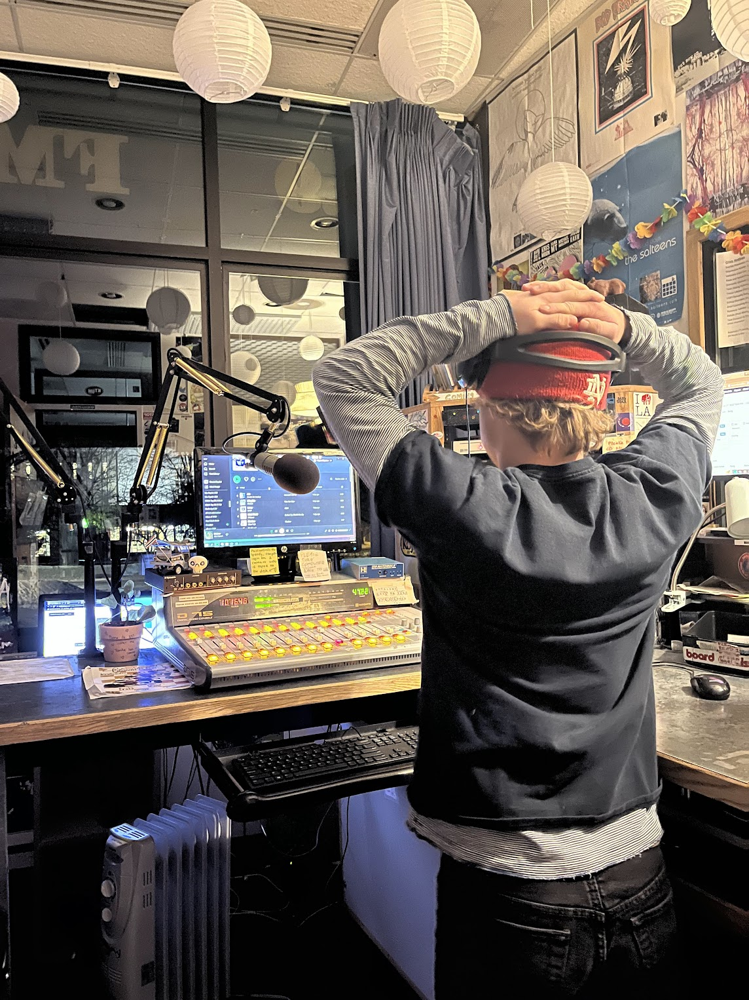

WILL SMYTH is 22 years old currently living in Missoula Montana attending the University of Montana. He will graduate this spring with a degree in Environmental Studies and Media art. Will spends most of his time outside, skiing, running, swimming, skateboarding, camping, and everything in between.
Beyond school Will is currently in the midst of a job and numerous ongoing projects. He delivers bread for La Petit Outre three to four days a week, working evening and late night shifts. Will is the lead designer for an ethical music streaming service, “Campfire”, which is undergoing early development as a non-profit startup. With a small group of friends, he is also working on a third full length street ski video. The past two videos Sucka and Snot have been very well received by the community and have landed the group money and free gear. In terms of personal projects, Will’s list seems to go on forever. Stay tuned for cone content, a number of zines, countless short videos, maybe some glitch art, and more. Visit his current portfolio for recent works.
In terms of Wil’s creative works, his inspiration comes from a number of different places. Looking within his culture of skateboarding and skiing, it is easy for him to find inspiration in videos, clothes, graffiti, and general aesthetics. People such as William Strobeck, Walter Medcraft, Viktor H., and Ian Durkin are some of the earliest inspirations to Will. However what inspires him the most is music. Everything that comes with it, the song, music videos, album covers, shows, bands, artists, it holds strong value to Will and how he views his surroundings.
Dramababy plays on KBGA 89.9 in Missoula Montana Sundays 10pm - 12am. The show “Hold My Hand” digs deep into female and non-male leads in music. Covering all genres Dramababy creates diverse mixes that are inspired from certain songs, places, or ideas. Nearly all of the music played is new, and from artists currently creating music. By playing modern music from underappreciated artists, Dramababy hopes not to only inspire listeners, but shed light on artists who are doing big things. Listeners can hear everything from big artists like PinkPantheress, Clairo, Jordana, Coco and Clair Clair, to artists such as Vayda, Packs, Remember Sports, ZAMINZO, and Babyxsosa.
